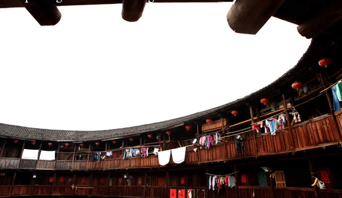

门票比较便宜，二十元。福建土楼刚刚在上个月被正式列入世界文化遗产名录，这里处处挂着庆祝的横副。继续坐摩托进入土楼景区内，首先到达的第一个楼就是“四菜一汤”中的方楼——步云楼。
步云楼位于田螺坑土楼群的中部，为方形土楼，系黄氏第十二世黄启麟于清康熙年间（1662-1672年）所建，1936年被匪烧毁，于1953年在旧址重建，坐东北朝西南，占地1050平方米，建筑面积1393平方米，楼高三层（11.93米），每层26间，土木结构，内通廊式，承重墙以生土为主要原料，天井自外向内分三级台阶，取平步青云之意，体现了土楼人家的风水文化。——摘自楼内介绍板。
没到步云楼之前，一直以为土楼都是圆形的，其实不然，土楼有圆、椭圆和方形。一般土楼的一楼都是厨房，再往上层就是卧室，从一楼厨房到顶楼卧室纵向为一户人家。整个土楼就像集体宿舍，四个角落各一个楼梯，上下楼都必须经过别人家门口。土楼内没有厕所，二、三楼的每家卧室门前，都放着一个马桶，很多并没倒掉清洗，从旁边经过那气味真的有点难以忍受。
|  |
土楼与其他地方的景点不同，这里仍然住着楼内居民，他们似乎对来来往往的游客早就习已为常，除了主入口处有几个小摊点卖点旅游纪念品、相关书籍及当地特产外，其他人似乎都直接无视游客的存在。正是吃饭时间，家家户户都坐在一楼的厨房门前用餐。
院中为公共场所。有水井，当然现在都已通上自来水，还有各家的自行车、摩托车及一些杂物。入口大门对面是佛堂，佛堂门前正坐着一群嬉闹的小朋友。